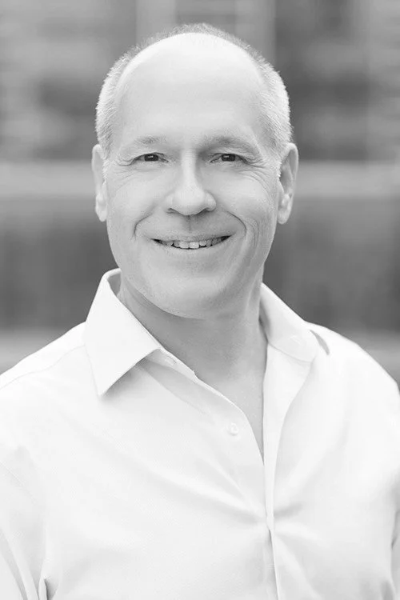
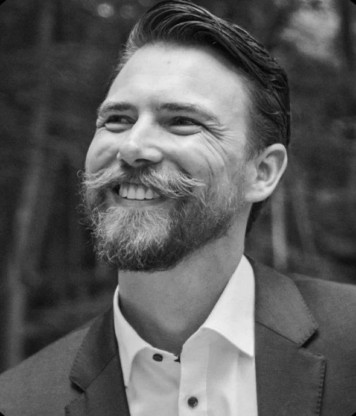

MeierWerks
Meet the Team
Bennett Meier
Bennett Meier is the founder and CEO of MeierWerks, a company redefining acoustics, deep learning, material science and manufacturing. With expertise in business management, manufacturing, and business strategy, Bennett has built MeierWerks into a vertically integrated/ United States based domestic manufacturer, developing class leading solutions in: Acoustics, Deep Learning, Additive Manufacturing, Composites, Magnetics and Heavy Industries. Under his leadership, the company is positioning itself as a global leader in post digital manufacturing and next-generation audio technology.

Roger Shively
Roger Shively brings nearly 40 years of expertise in acoustical engineering, product development, and advanced simulation. He previously served as Chief Engineer for Harman’s North American and Asian acoustic systems divisions. A Purdue alumnus, Roger was awarded the university’s 2022 Outstanding Alumni Award in Engineering Education. Roger is an active member of AES, ASA, SAE, and IEEE, and has published extensively on transducers, psychoacoustics, and computer modeling. Roger holds several patents and currently serves as Co-Chair of the AES Automotive Audio Technical Committee and Chair of the APDA’s Automotive Audio Education Pillar.
Diane Meier
Diane Meier is a branding expert with a proven track record in corporate direction, market expansion, and high-value brand positioning. As Principal of Meier Advertising, she has guided numerous companies toward growth, investment, and successful exits. Notably, she led the transformation of a disparate group of international factories into Sunworthy, the largest global luxury wall-covering brand, culminating in a $1 billion sale. Diane has advised leading brands across luxury retail, technology, and consumer goods, including Neiman Marcus, Balmain, Condé Nast, Blanc de Chine, and Chopard. Her expertise spans corporate strategy, brand storytelling, and scaling businesses from startup to unicorn status, making her a sought-after consultant for founders, executives, and investors.

Dr. Maximilian Heres
Dr. Maximilian Heres is an accomplished engineer and scientist specializing in advanced manufacturing, additive technologies, and automation. Holding an M.S. in Physics and a Ph.D. in Chemical Engineering from the University of Tennessee, Knoxville, he conducted doctoral research at Oak Ridge National Laboratory, focusing on molecular dynamics in polymers. He played a key role in developing the 3D-printed autonomous shuttle, Olli 2.0, at Local Motors, later co-founding Loci Robotics, Inc., where he designed large-format robotic 3D printers. As founder of Heres 3D, he has provided engineering consulting, prototyping, and manufacturing solutions. A hands-on engineer and automotive enthusiast, Maximilian combines expertise in composites, CNC machining, and digital fabrication to push the boundaries of high-tech manufacturing.